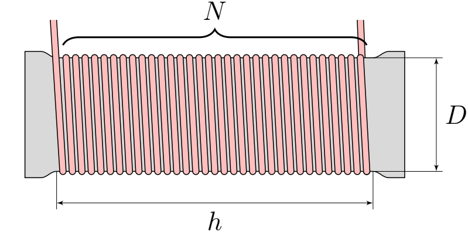
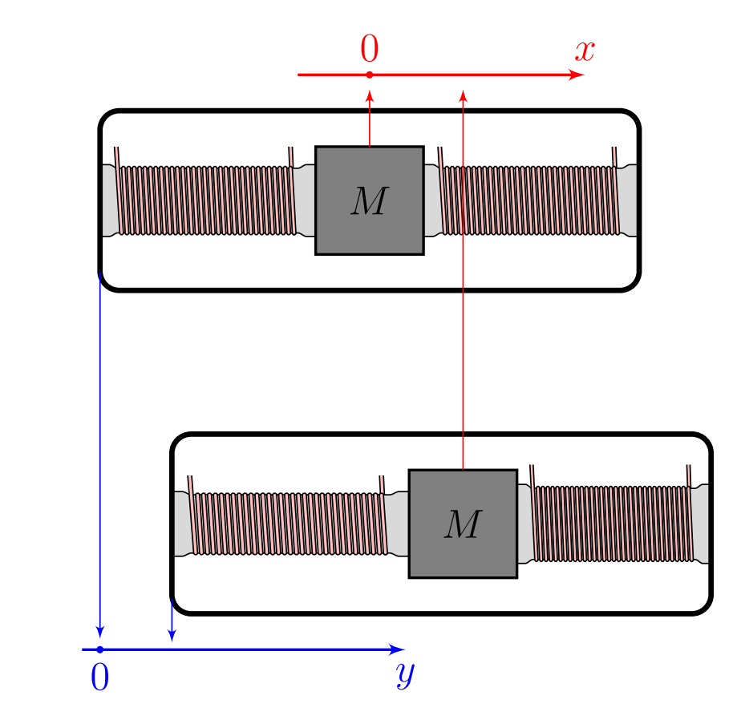
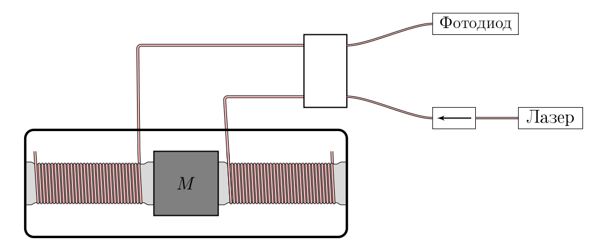
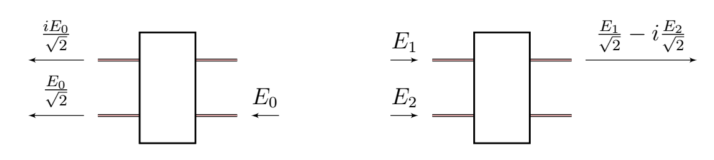
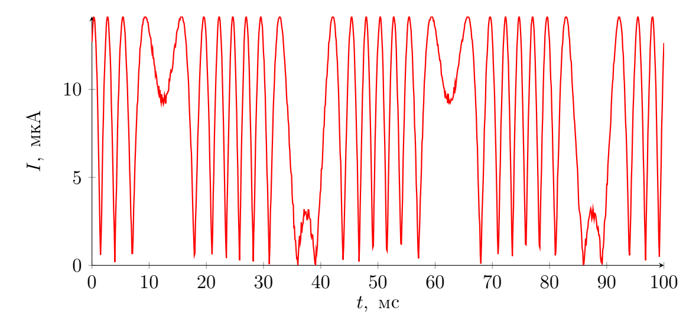

Y26 (2026) — English translation
Fiber-based optical circuits make it possible to produce inexpensive yet sensitive sensors. As an example, consider a fiber accelerometer, a device that measures acceleration. Boltzmann constant $k_B = 1.38 \cdot 10^{-23}~Дж/К$.
Boltzmann constant $k_B = 1.38 \cdot 10^{-23}~Дж/К$.
A rigid wire with diameter $d=80~мкм$ and Young's modulus $E=74.0~ГПа$ is tightly wound around the rubber support. The number of turns of the wire is $N=80$, the height of the winding area is $h=2.00~см$, the diameter of the winding area is $D=3.50~см$. Silicone rubber is a material whose shape can be changed extremely easily, but at the same time its volumetric elasticity is very high. Therefore, the volume of rubber inside the winding area does not change. Let's say the height of the winding area has changed and became $h + \delta h$, $\delta h \ll h$, and the diameter $D + \delta D$.
Silicone rubber is a material whose shape can be changed extremely easily, but at the same time its volumetric elasticity is very high. Therefore, the volume of rubber inside the winding area does not change.
Let's say the height of the winding area has changed and became $h + \delta h$, $\delta h \ll h$, and the diameter $D + \delta D$.

Due to the deformation of the rubber, the length of the wire became $L + \delta L$.
Consider a load of mass $M=540~г$ sandwiched between two identical vertical supports discussed earlier. The supports are rigidly attached to the non-deformable sensor body.

The position of the mass load $M$ in the laboratory reference frame (LRF) will be denoted by $x$ and the position of the sensor body in the LRF will be denoted by $y$. The equilibrium corresponds to $x=y=0$.
In any mechanical system there are dissipations, so the equation of motion of the load, in fact, has the form \[\ddot{x} + 2 \zeta \omega_0 \dot{x} + \omega_0^2 x = Ay,\] where $\zeta \ll 1$ is the dissipation coefficient. Let us assume that the sensor body experiences harmonic vibrations $y = y_0 e^{i \omega t}$. Then the load also oscillates, $x = x_0 e^{i \omega t}$, and with it for the left support $\delta h = h_0 e^{i \omega t}$ and $\delta L = L_0 e^{i \omega t}$.
Let us assume that the sensor body experiences harmonic vibrations $y = y_0 e^{i \omega t}$. Then the load also oscillates, $x = x_0 e^{i \omega t}$, and with it for the left support $\delta h = h_0 e^{i \omega t}$ and $\delta L = L_0 e^{i \omega t}$.
For frequencies $\omega$ far from the resonant one $\omega_0$, the sensor operates either in seismograph mode: $y(t) = K_s \cdot \delta L(t)$, or in accelerometer mode: $\ddot{y}(t) = K_a \cdot \delta L(t)$, where $y(t)$ is a superposition of several low-frequency or high-frequency oscillations. Example of low-frequency oscillations: \[ y(t) = B_1 \sin (\omega_1 t) + B_2 \cos (\omega_2 t),\]where $\omega_{1,2} \ll \omega_0$. The low frequency region is characterized by $\zeta \ll \omega_{1,2} / \omega_0$.
If two pieces of optical fiber are used as the hard wire for the sensor described in Part A, then the interferometric circuit shown below can be used to measure $\delta L$. The refractive index of the optical fiber core is $n=1.47$. This part continues to use the notation and meanings of quantities from Part A.
This part continues to use the notation and meanings of quantities from Part A.

A laser with intensity $I_0$ and wavelength $\lambda=1.15~мкм$ is used as a light source. Through the isolator (it allows light to pass in only one direction), the light goes to the $2 \times 2$ 50/50 splitter. After splitting, the light enters a pair of pieces of optical fiber wound around the left and right sensor supports. At the ends of the segments, light is reflected from their edge with an amplitude reflection coefficient $r$. After reflection from the edge of the fibers, the light again passes through the splitter and hits the photodiode, which registers the useful signal. The operating principle of the splitter is as follows: if a wave with complex amplitude $E_0$ is incident from the laser side, then it comes out of both outputs on the other side with complex amplitudes $E_0/\sqrt{2}$ and $iE_0/\sqrt{2}$. If waves with complex amplitudes $E_1$ and $E_2$ fall from the side of the measuring system, then a wave with complex amplitude $E_1/\sqrt{2}-iE_2/\sqrt{2}$ emerges from the side of the photodiode. Let the sensor be in such a state that the right support is compressed, and the length of the fiber wound on it is increased by $\delta L$.
The operating principle of the splitter is as follows: if a wave with complex amplitude $E_0$ is incident from the laser side, then it comes out of both outputs on the other side with complex amplitudes $E_0/\sqrt{2}$ and $iE_0/\sqrt{2}$.
If waves with complex amplitudes $E_1$ and $E_2$ fall from the side of the measuring system, then a wave with complex amplitude $E_1/\sqrt{2}-iE_2/\sqrt{2}$ emerges from the side of the photodiode.
Let the sensor be in such a state that the right support is compressed, and the length of the fiber wound on it is increased by $\delta L$.

Here, $\varphi_0$ is the incident phase difference between the light passing through the fiber wound on the right and left supports, respectively, at $\delta L=0$.
Note. You don't have to watch the $\varphi_0$ sign. In other words, solutions differing by the change $\varphi_0 \to -\varphi_0$ are considered equivalent.
The sensor is being tested for $y(t) = Y \sin (2 \pi f t)$. The dependence of the current readings through the photodiode on time is shown in the figure. The sensor operates in accelerometer mode.

Let us find a strict theoretical limit for the minimum value of acceleration that can be studied using an accelerometer when operating at room temperature $T$.
The quartz from which the optical fiber core is made has a temperature dispersion $\beta = \mathrm{d}n/\mathrm{d}T = 7.6 \cdot 10^{-6}~К^{-1}$ and a coefficient of thermal expansion $\alpha = \mathrm{d}L/(L \, \mathrm{d}T) = 0.54 \cdot 10^{-6}~К^{-1}$. Let us divide the optical fiber of length $L$ into $P$ small sections of length $\Delta L$. When light passes through the $i$-th section, the $\varphi_{i,0}$ phase occurs. In this case, the $\Phi_0 = \sum\limits_i^P \varphi_{i,0}$ phase accumulates throughout the fiber.
We will assume that the difference in temperature $\Delta T_i$ from room temperature is random and independent (for $i \neq j$ it holds that $\langle \Delta T_i \Delta T_j \rangle=0$). Moreover, it is zero on average, $\langle \Delta T_i \rangle = 0$, and has the same variance $\langle \Delta T_i^2 \rangle = \langle \Delta T^2 \rangle$. The total change in phase shift caused by thermal fluctuations when passing (in one direction) through a fiber of length $L$ is equal to $\Delta \Phi = \sum\limits_{i=1}^P \Delta \varphi_i$.
The total change in phase shift caused by thermal fluctuations when passing (in one direction) through a fiber of length $L$ is equal to $\Delta \Phi = \sum\limits_{i=1}^P \Delta \varphi_i$.
The total change in the phase shift caused by thermal fluctuations when passing through the fiber back and forth (with reflection from the second end) will be denoted by $\Delta \Psi$.
The value $\Delta L$, the length of the section along which the temperature is considered constant, will be considered equal to $30.0~\mathrm{мкм}$.
Source: https://pho.rs/p/5012